Components & Factories
kfactory ships a library of built-in photonic components under kf.cells and the
factories that generate them under kf.factories.
| Component | Cell function | Factory |
|---|---|---|
| Straight waveguide | kf.cells.straight.straight |
kf.factories.straight.straight_dbu_factory |
| Euler bend | kf.cells.euler.bend_euler |
kf.factories.euler.bend_euler_factory |
| Euler S-bend | kf.cells.euler.bend_s_euler |
kf.factories.euler.bend_s_euler_factory |
| Circular bend | kf.cells.circular.bend_circular |
kf.factories.circular.bend_circular_factory |
| Taper | kf.cells.taper.taper |
kf.factories.taper.taper_factory |
| Bezier S-bend | kf.cells.bezier.bend_s |
kf.factories.bezier.bend_s_bezier_factory |
Cells vs. Factories
Every cell function under kf.cells.* uses the built-in demo KCLayout instance
(kf.cells.demo). These are convenient for quick prototyping and learning.
A factory is a function that creates a cell function bound to a specific
KCLayout. When you build your own PDK you call the factory once, passing your
layout, and get back a cell function that creates geometry in that layout:
my_straight = kf.factories.straight.straight_dbu_factory(kcl=my_kcl)
wg = my_straight(width=500, length=10_000, layer=LAYER.WG)
This page demonstrates both patterns side by side.
Setup
import kfactory as kf
class LAYER(kf.LayerInfos):
WG: kf.kdb.LayerInfo = kf.kdb.LayerInfo(1, 0)
WGCLAD: kf.kdb.LayerInfo = kf.kdb.LayerInfo(2, 0)
SLAB: kf.kdb.LayerInfo = kf.kdb.LayerInfo(3, 0)
L = LAYER()
kf.kcl.infos = L
Straight waveguide
kf.cells.straight.straight creates a rectangle of material with optional
slab/exclude layers defined by a LayerEnclosure.
┌──────────────────────────────┐
│ Slab/Exclude │
├──────────────────────────────┤
│ │
│ Core │
│ │
├──────────────────────────────┤
│ Slab/Exclude │
└──────────────────────────────┘
Arguments are in µm (the um variant). All coordinates are converted to DBU
internally. There is also a straight_dbu function for DBU-native code.
from kfactory.cells.straight import straight
# Simple straight — no cladding
wg = straight(width=0.5, length=10.0, layer=L.WG)
wg.plot()

With cladding via LayerEnclosure
Wrap the core with an oxide/slab layer using LayerEnclosure:
enc = kf.LayerEnclosure(
dsections=[(L.WGCLAD, 3)], # 3 µm cladding on all sides
kcl=kf.kcl,
)
wg_clad = straight(width=0.5, length=10.0, layer=L.WG, enclosure=enc)
wg_clad.plot()
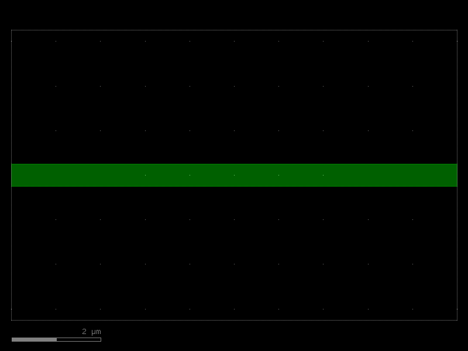
Using the factory directly
For PDK work, bind a straight factory to your KCLayout:
from kfactory.factories.straight import straight_dbu_factory
my_straight = straight_dbu_factory(kcl=kf.kcl)
# Dimensions in DBU (1 µm = 1000 dbu at default 1 nm/dbu)
wg_dbu = my_straight(
width=kf.kcl.to_dbu(0.5),
length=kf.kcl.to_dbu(20.0),
layer=L.WG,
)
wg_dbu.plot()

Euler bend
An Euler bend (clothoid bend) has a radius that varies continuously from 0 at the input to a maximum value at the midpoint and back to 0 at the output. This minimises mode mismatch and reflection compared to a circular bend of the same nominal radius.
Key parameters:
- width — waveguide core width [µm]
- radius — nominal radius of the backbone [µm]
- angle — total angle swept (default 90°)
- resolution — number of backbone segments per 360° (default 150)
from kfactory.cells.euler import bend_euler
bend = bend_euler(width=0.5, radius=10.0, layer=L.WG)
bend.plot()

Euler bend — custom angle
bend_45 = bend_euler(width=0.5, radius=10.0, layer=L.WG, angle=45)
bend_45.plot()
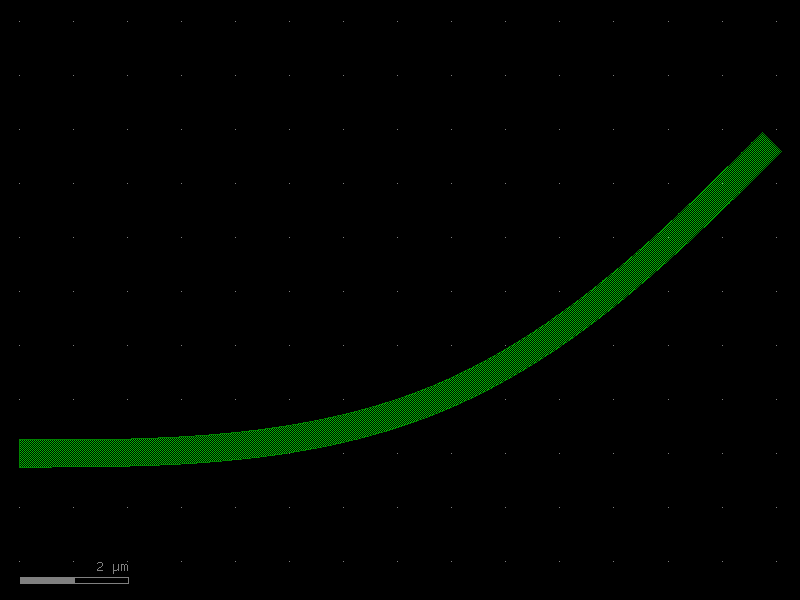
Euler S-bend
An Euler S-bend offsets two ports laterally by offset µm. The backbone consists of
two Euler quarter-circles joined at their inflection point.
from kfactory.cells.euler import bend_s_euler
sbend = bend_s_euler(offset=2.0, width=0.5, radius=10.0, layer=L.WG)
sbend.plot()
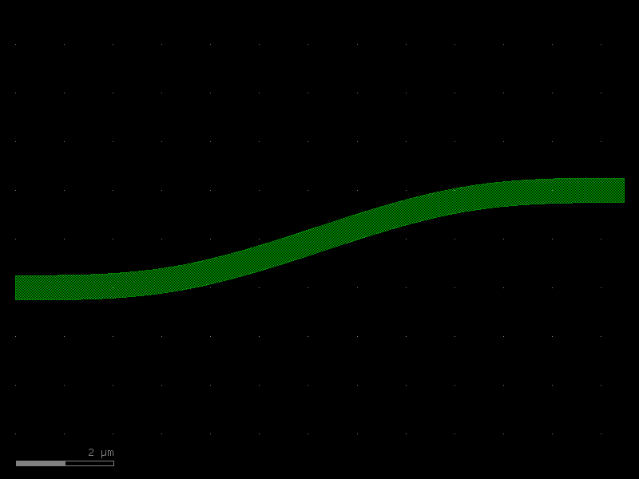
Euler factory — PDK usage
Bind an Euler factory to your layout to create bends that live in your PDK:
from kfactory.factories.euler import bend_euler_factory
my_bend_euler = bend_euler_factory(kcl=kf.kcl)
pdk_bend = my_bend_euler(width=0.5, radius=10.0, layer=L.WG)
pdk_bend.plot()
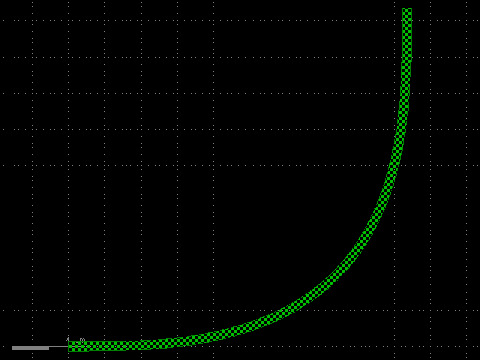
Circular bend
A circular bend has a constant radius throughout. It is faster to compute than an Euler bend but has higher mode mismatch at the junction with a straight waveguide.
Key parameters:
- width — waveguide core width [µm]
- radius — constant bend radius [µm]
- angle — angle swept (default 90°)
- angle_step — angular resolution (default 1° per point)
from kfactory.cells.circular import bend_circular
circ = bend_circular(width=0.5, radius=10.0, layer=L.WG)
circ.plot()
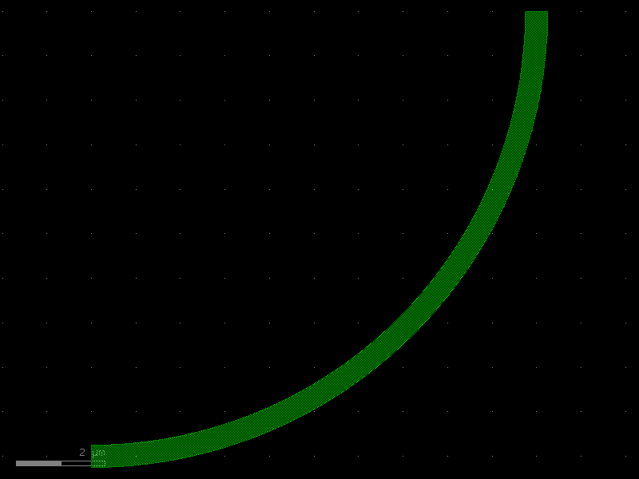
Circular bend — 180°
circ_180 = bend_circular(width=0.5, radius=5.0, layer=L.WG, angle=180)
circ_180.plot()
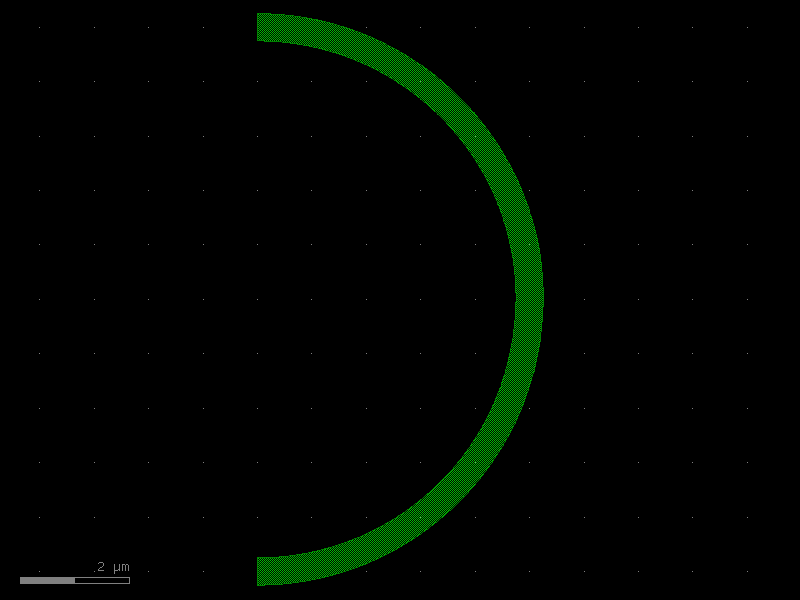
Taper
A linear taper transitions between two different waveguide widths. Typical uses: - Mode-field adapter between a narrow routing waveguide and a wide MMI port. - Spot-size converter at a chip facet.
__
_/ │
_/ __│
_/ _/ │
│ _/ │ Core
│_/ │
│_ │
│ \_ │
│_ \_ │
\_ \__│
\_ │
\__│
from kfactory.cells.taper import taper
t = taper(width1=0.5, width2=3.0, length=20.0, layer=L.WG)
t.plot()
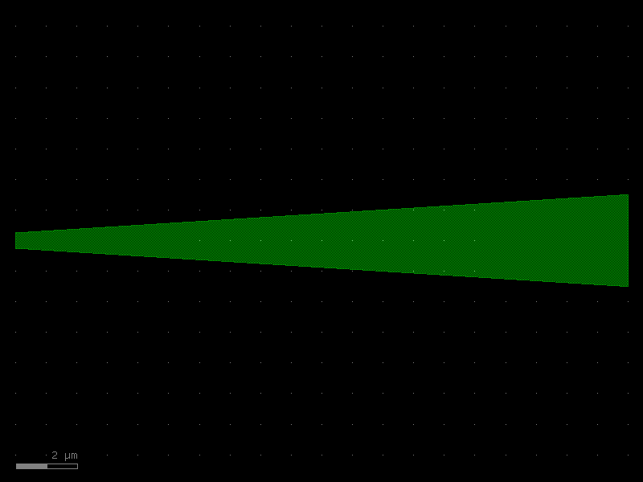
Taper with cladding
enc_slab = kf.LayerEnclosure(dsections=[(L.SLAB, 2)], kcl=kf.kcl)
t_clad = taper(width1=0.5, width2=3.0, length=20.0, layer=L.WG, enclosure=enc_slab)
t_clad.plot()
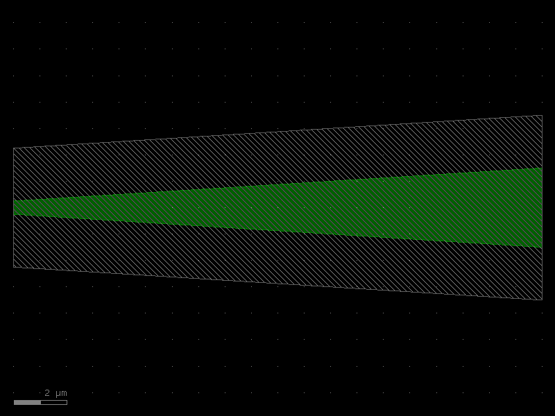
Bezier S-bend
A Bezier S-bend uses a cubic Bezier curve to create a smooth lateral offset. It
offers more shape control than an Euler S-bend (via t_start/t_stop).
Key parameters:
- width — waveguide width [µm]
- height — lateral offset between the two ports [µm]
- length — horizontal span of the bend [µm]
- nb_points — backbone resolution (default 99)
from kfactory.cells.bezier import bend_s
bez = bend_s(width=0.5, height=2.0, length=15.0, layer=L.WG)
bez.plot()
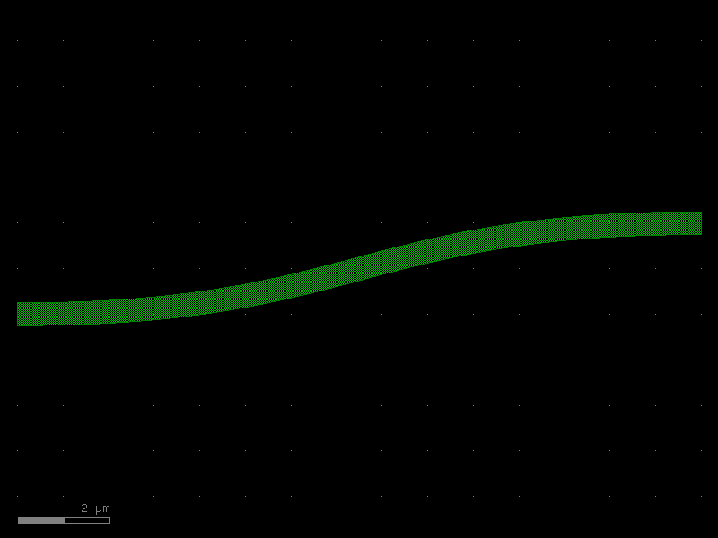
Building your own PDK components
The factory pattern lets you create component functions that are:
1. Bound to your layout — geometry lands in the right KCLayout.
2. Cached automatically — calling with the same params returns the same cell.
3. Named consistently — cell names embed all parameters for traceability.
Example: custom PDK with two components
# Create a dedicated layout for "MyPDK"
my_pdk = kf.KCLayout("MyPDK")
my_pdk.infos = L # reuse the same layer definitions
# Build factory-backed cell functions
@kf.cell
def my_waveguide(width: float, length: float) -> kf.KCell:
"""Straight waveguide using MyPDK's layout.
Args:
width: Core width [µm].
length: Waveguide length [µm].
"""
c = kf.KCell()
c.shapes(c.kcl.find_layer(L.WG)).insert(
kf.kdb.DBox(0, -width / 2, length, width / 2)
)
c.add_port(
port=kf.Port(
name="o1",
trans=kf.kdb.Trans(2, False, 0, 0),
layer=c.kcl.find_layer(L.WG),
width=kf.kcl.to_dbu(width),
port_type="optical",
)
)
c.add_port(
port=kf.Port(
name="o2",
trans=kf.kdb.Trans(0, False, kf.kcl.to_dbu(length), 0),
layer=c.kcl.find_layer(L.WG),
width=kf.kcl.to_dbu(width),
port_type="optical",
)
)
return c
wg_custom = my_waveguide(width=0.45, length=5.0)
print(f"Cell name: {wg_custom.name!r}")
print(f"Ports: {[p.name for p in wg_custom.ports]}")
wg_custom.plot()
Cell name: 'my_waveguide_W0p45_L5'
Ports: ['o1', 'o2']
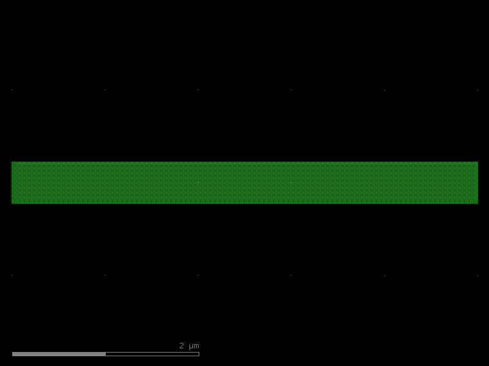
Caching in action
The @kf.cell decorator caches cells by their parameter signature. Calling the same
function with the same arguments returns the identical cell object:
wg_a = my_waveguide(width=0.5, length=10.0)
wg_b = my_waveguide(width=0.5, length=10.0)
wg_c = my_waveguide(width=0.5, length=20.0) # different params → new cell
print(f"wg_a is wg_b: {wg_a is wg_b}") # True — same cached cell
print(f"wg_a is wg_c: {wg_a is wg_c}") # False — different length
wg_a is wg_b: True
wg_a is wg_c: False
Assembling components
Use the << operator to place cell instances and connect() to snap ports:
@kf.cell
def mzi_stub() -> kf.KCell:
"""A minimal MZI stub — two bends connected via straights."""
c = kf.KCell()
enc = kf.LayerEnclosure(dsections=[(L.WGCLAD, 2)], kcl=kf.kcl)
# Bend instances (euler)
b1 = c << bend_euler(width=0.5, radius=10.0, layer=L.WG)
b2 = c << bend_euler(width=0.5, radius=10.0, layer=L.WG)
b3 = c << bend_euler(width=0.5, radius=10.0, layer=L.WG)
b4 = c << bend_euler(width=0.5, radius=10.0, layer=L.WG)
# Connect bends into a U-shape
b2.connect("o1", b1.ports["o2"])
b3.connect("o1", b2.ports["o2"])
b4.connect("o1", b3.ports["o2"])
# Straight arm between b1 and b4
arm_length = kf.routing.optical.get_radius(
bend_euler(width=0.5, radius=10.0, layer=L.WG)
)
s1 = c << straight(width=0.5, length=arm_length * 2, layer=L.WG, enclosure=enc)
s1.connect("o1", b4.ports["o2"])
c.add_ports(b1.ports.filter(port_type="optical", regex="o1"))
c.add_ports(s1.ports.filter(port_type="optical", regex="o2"))
c.auto_rename_ports()
return c
mzi = mzi_stub()
mzi.plot()
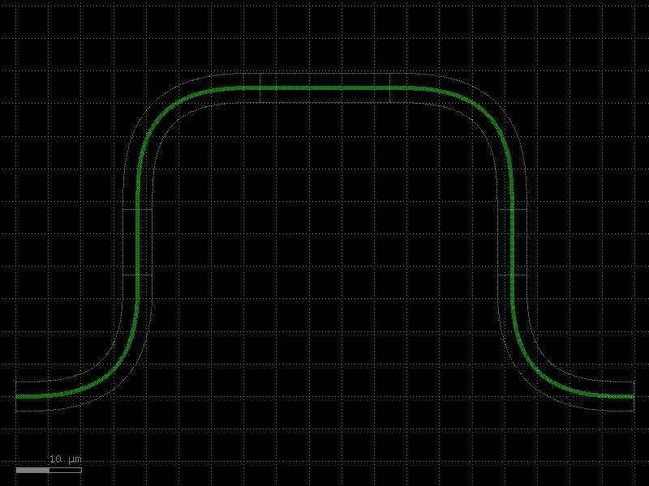
See Also
| Topic | Where |
|---|---|
| Straight waveguide deep-dive | Components: Straight |
| Euler (clothoid) bends | Components: Euler Bends |
| Circular (constant-radius) bends | Components: Circular Bends |
| Width tapers | Components: Tapers |
| Bezier S-bends | Components: Bezier |
| Virtual (non-physical) cells | Components: Virtual Cells |
| PCells & caching | Components: PCells |
| Factory functions reference | Components: Factories |
| KCell / DKCell / VKCell | Core Concepts: KCell |